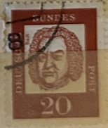
| SOURCE | TITLE| IMAGE MATCH | click to source page |
| Amazon.com | Amazon.com: FRD (FR.Germany) 352y R with Counting Number 1961 Significant German (Stamps for Collectors) Music/Dance : Toys & Games | 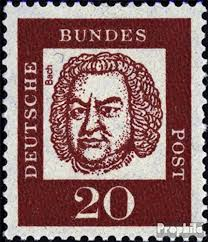 |
| eBay | West Germany - 1961 - Famous Germans - Johann Sebastian Bach - 20Pfg - Used-#4 | eBay | 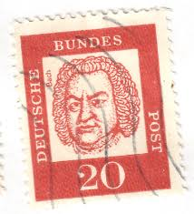 |
| Find Your Stamps Value | Value of deutsche bundes post 20 red stamps | 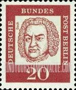 |
| eBay | Cancelled Germany Postage Stamp....Deutsche Bundes Post, 20 Denomination 1960s | eBay | 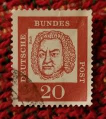 |
| lastdodo.com | Johann Sebastian Bach [1685-1750] Stamp catalogue - LastDodo | 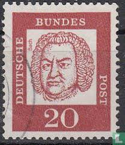 |
| Amazon UK | Prophila Collection Berlin (West) 204DZ with printing signs unmounted mint/never hinged ** MNH 1961 Significant german (Stamps for collectors) : Amazon.co.uk: Toys & Games | 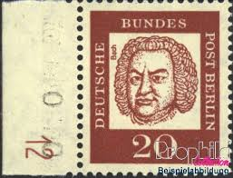 |
| eBay | GERMANY 829p - Johann Sebastian Bach "1963 Flurorescent Paper" (pc16035) | eBay | 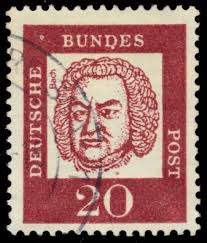 |
| Etsy | Vintage Germany 1963 Musical Composer Bundes Used Postage Stamp - Etsy | 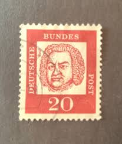 |
| HipStamp | Search "Martin Luther" / HipStamp | 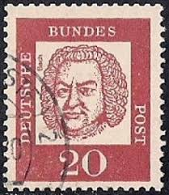 |
| Amazon.com | Amazon.com: Berlín (oeste) 204 horizontal pareja 1961 Significativa alemán (sellos para coleccionistas) : Juguetes y Juegos | 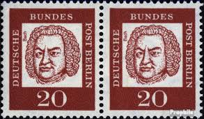 |
| PicClick | GERMANY DEUTSCHE BUNDES Post 1961 Famous Germans 15 Blue Luther -Used 26C $2.00 - PicClick | 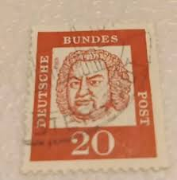 |
| iStock | Postage Stamp Germany 1970 Shows Ludwig Van Beethoven 17701827 Stock Photo - Download Image Now - iStock | 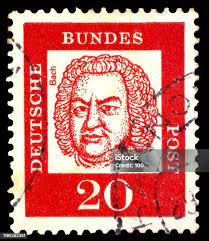 |
| Alamy | Composer musician stamp hi-res stock photography and images - Alamy | 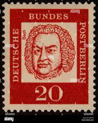 |
| Alamy | Germany - stamp 1961: Edition on Distinguished Germans, shows Bishop and scholar Albertus Magnus Stock Photo - Alamy | 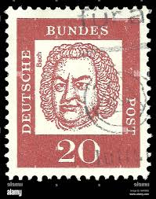 |
| Alamy | Johann Sebastian Bach on german postage stamp Stock Photo - Alamy | 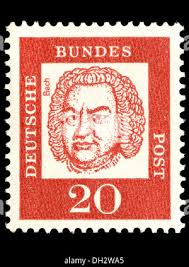 |
| Amazon.nl | BRD (BR.Germany) Mi.-Quantity: K4 House Order number 1963 Significant German (Stamps for collectors) : Amazon.nl: Toys & Games | 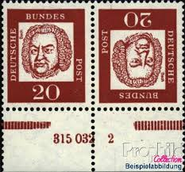 |
| eBay | WEST GERMANY # 829 Untagged MNH JOHANN SEBASTIAN BACH | eBay | 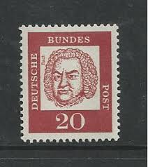 |
| Redbubble | Bach Stamp Stickers for Sale | Redbubble | 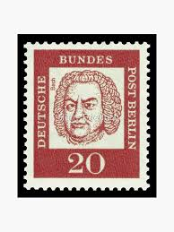 |
| J.S.Bach stamp collection 🎵 | 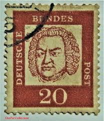 | |
| PicClick UK | DEUTSCHE BUNDES POST 40 Blue Used £1.45 - PicClick UK | 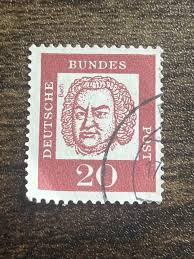 |
| sellosmundo.com | Stamps page 172 | 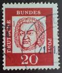 |
| iStock | Albrecht Durer German Painter And Engraver Stock Photo - Download Image Now - Albrecht Durer, Art, Arts Culture and Entertainment - iStock | 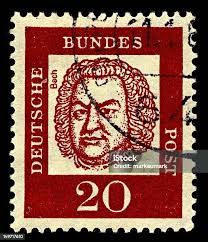 |
| eBay | Germany Postage Stamp. Deutsche Bundes Post, 20 Denomination 1960s TKS359* | eBay | 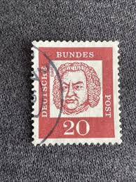 |
| Stamp Community Forum | Need Help Translating German Color Names - Stamp Community Forum | 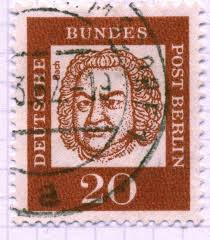 |
| Shutterstock | 1,4 ribu Ilustrasi, Foto Stok, dan Gambar Johann sebastian bach Tanpa Royalti | Shutterstock | 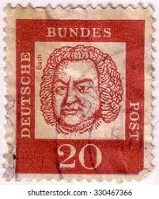 |
| Dreamstime.com | Bach Circa Stock Photos - Free & Royalty-Free Stock Photos from Dreamstime | 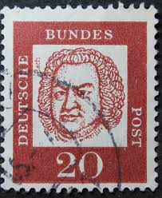 |
| iStock | Vintage German Stamp Johann Sebastian Bach Stock Photo - Download Image Now - Adult, German Culture, Germany - iStock | 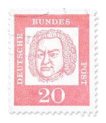 |
| Dreamstime.com | Johann Sebastian Bach Stamp Stock Photos - Free & Royalty-Free Stock Photos from Dreamstime | 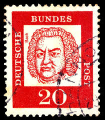 |
| eBay UK | BERLIN Western Sectors 1961 20pf carmine-red SGB199 MNH FG Famous Germans ##W14 | eBay UK | 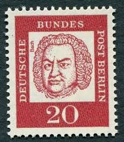 |
| eBay | West Germany 1961-4 SG#1266a 20pf Red Germans Flourescent Paper BLock #D88621 | eBay | 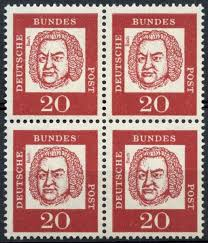 |
| Todocolección | alemania - valor facial 5 - albertus magnus, pe - Buy Antique stamps of Germany on todocoleccion | 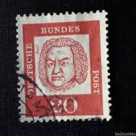 |
| eBay UK | Vintage Deutsche Bundespost Stamp 20 Pf Johann Sebastian Bach | eBay UK | 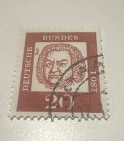 |
| ycjstamps.com | Stamp | 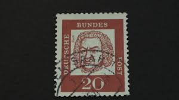 |
| iStock | German Postage Stamps Stock Photo - Download Image Now - Above, Antique, Black Background - iStock | 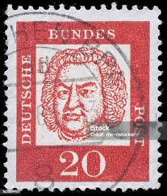 |
| Dreamstime.com | 766 Johann Sebastian Bach Picture Stock Photos - Free & Royalty-Free Stock Photos from Dreamstime | 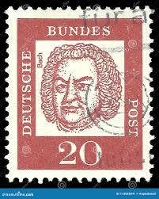 |
| eBay | Germany Stamp Johann Sebastian Bach 20pf Used 829 | eBay | 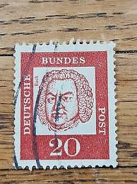 |
| iStock | Postage Stamp Germany Gdr 1973 Johann Gottfried Herder Weimar Stock Photo - Download Image Now - iStock | 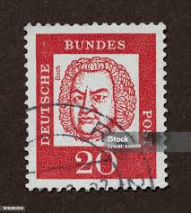 |
| eBay | GERMANY DDR B19 - Bach Year "Johann Sebastian Bach" (pc19249) | eBay | 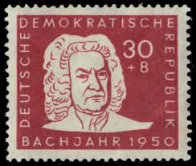 |
| Amazon UK | Prophila Collection FRD (FR.Germany) 352y OR upper edge piece fine used/cancelled 1961 Significant german (Stamps for collectors) : Amazon.co.uk: Toys & Games | 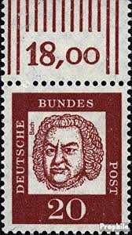 |
| Shutterstock | Germany Circa 1961 Stamp Printed Germany Stock Photo 330016991 | Shutterstock | 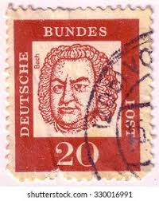 |
| Mudah.my | Stamp @ Bundes - Hobby & Collectibles for sale in Setiawangsa, Kuala Lumpur | 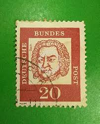 |
| eBay | DDR Scott #B19 Used | eBay | 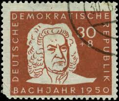 |
| eBay | Germany, Postage Stamp, #1440-1441 Used, 1985 Georg Handel (AC) | eBay | 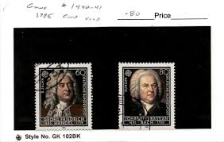 |
| HipStamp | DDR 1950, Sc.#B19 + B20 MNH, Johann Sebastian Bach | Europe - Germany & Colonies - Allied Occupation, Semi-Postal Stamp / HipStamp | 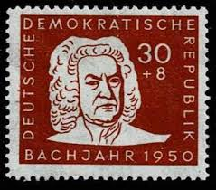 |
| eBay | Berlin 204 Block Of Four Mint DZ 4 .................................. 2/2745 | eBay | 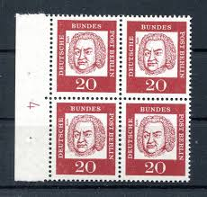 |
| eBay | Germany Music Famous Composers Bach Handel Schutz set 1935 MLH | eBay | 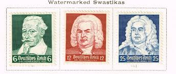 |
| ebid.net | Guernsey Moulin Huet Studio Pottery Floral Vase on eBid United Kingdom | 177287732 | 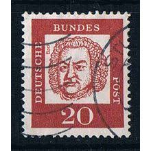 |
| Dreamstime.com | 844 Cantor Stock Photos - Free & Royalty-Free Stock Photos from Dreamstime | 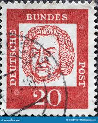 |
| Todocolección | pau casals - dirigint l'orquestra del festival - Buy LP vinyl records of Classical Music, Opera, Zarzuela and Marches on todocoleccion | 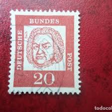 |
| eBay | Germany Scott # 456 - 458 Set VF OG mint never hinged scv $ 26 ! see pic ! | eBay | |
| eBay | DR. 1935 Schütz, Bach, Händel 573-75 **, (25500) | eBay | |
| eBay | GERMANY #456-8 Mint Never Hinged, Scott $25.50 | eBay | |
| iStock | Russian Postage Stamps Stock Photo - Download Image Now - Above, Antique, Black Background - iStock | |
| eBay | GERMANY 1935 573-575 ** MNH FLAWLESS SET OF MUSICIANS BACH HÄNDEL 32€(48702 | eBay | |
| Shutterstock | Karnal Haryana India -august 6th 2025-closeup Stock Photo 2671873953 | Shutterstock | |
| eBay | BRD FRG #Mi346-Mi374 MNH 1961 Year Set + Varieties [823-847 B376-B379] | eBay | |
| Discogs | Georg Philipp Telemann – Oberlin Baroque Performance Institute, 1981 – Vinyl (LP), 1982 [r7027285] | Discogs | |
| Shutterstock | 208개의 Bach stamp 로열티 프리 이미지 및 스톡 사진 | Shutterstock | |
| eBay | German Empire 574 with hinge 1935 Protection-,Bach,-Deal-Celebrations (9841516 | eBay | |
| Shutterstock | Germany Circa 1963 Stamp Printed Germany Stock Photo 339255026 | Shutterstock |